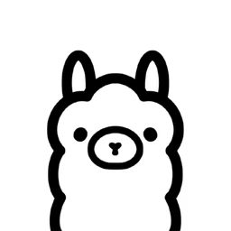

01
Interroger tes documents
Glisse un contrat, une notice ou un relevé en PDF : l'IA répond à ta question et cite le passage d'où vient la réponse.
PDF→Question→Réponse + passage

Ollama fait tourner l'IA sur ton ordinateur, Open WebUI lui donne l'interface de ChatGPT. Gratuit, sans limite, et tes conversations restent chez toi.

Il faut deux outils. Ollama est le moteur : il télécharge des modèles d'IA ouverts (Gemma, Qwen, Mistral, DeepSeek, gpt-oss…) et les fait tourner sur ton ordinateur, sous Windows, macOS ou Linux. Open WebUI est l'interface : une page web qui ressemble à ChatGPT, avec l'historique des conversations, le choix du modèle en un clic, l'envoi de documents (l'IA répond en citant le passage), la recherche web en option et plusieurs comptes. Une fois les modèles téléchargés, tout marche sans Internet et rien ne sort de chez toi. La seule limite, c'est la puissance de ton PC : plus le modèle est gros, plus il faut de mémoire.
Une seule image avec Ollama intégré : docker run -d -p 3000:8080 -v ollama:/root/.ollama -v open-webui:/app/backend/data --name open-webui --restart always ghcr.io/open-webui/open-webui:ollama (ajoute --gpus=all avec une carte Nvidia). Puis ouvre http://localhost:3000.
RecommandéInstalle Ollama depuis ollama.com (Windows, macOS, Linux), puis Open WebUI avec pip install open-webui et open-webui serve (Python 3.12), ou avec l'appli de bureau Open WebUI.
Sans DockerPossible avec Docker, mais sans carte graphique les réponses sont lentes : garde de petits modèles. Pratique pour donner l'accès à toute la maison depuis le navigateur.
Petits modèlesGlisse un contrat, une notice ou un relevé en PDF : l'IA répond à ta question et cite le passage d'où vient la réponse.
Dans le train ou en avion, résume, traduis ou rédige sans connexion : les modèles téléchargés tournent sur ton PC.
Ollama se branche à des outils de code (Claude Code, OpenCode, Codex…) avec ollama launch : ton code reste sur ta machine.
Open WebUI gère plusieurs comptes : chacun a ses conversations, et tu choisis quels modèles chacun peut utiliser.
Pose la même question à deux modèles côte à côte (Gemma, Qwen, Mistral…) et garde celui qui te répond le mieux.
Ollama, créé en 2023, a dépassé 187 000 étoiles sur GitHub ; il a levé 65 millions de dollars en juillet 2026 et revendique près de 9 millions de développeurs actifs par mois. Open WebUI, créé par Timothy Jaeryang Baek, dépasse 158 000 étoiles et annonce plus de 371 millions de téléchargements. En France, l'Université de Rennes a monté son IA maison (RAGaRenn) avec Open WebUI et Ollama, hébergée dans un datacenter régional, et l'Université de Strasbourg l'utilise aussi en production.
Nouvelles versions chaque semaine pour les deux projets (Ollama 0.40.16 et Open WebUI 0.13.3 publiées début novembre 2026).
Plus de 187 000 et plus de 158 000 étoiles sur GitHub, des dizaines de milliers de forks et d'intégrations.
Avec des modèles téléchargés, tout reste sur ta machine, même sans Internet ; seuls les modèles « cloud » d'Ollama envoient tes messages à l'extérieur.
Ollama, financé par des investisseurs, vit de son offre cloud payante ; Open WebUI vend une licence Entreprise, et sa licence n'est plus open source au sens strict.
Très utilisés, jusque dans des universités, mais encore en version 0.x avec des changements fréquents : fais des sauvegardes avant de mettre à jour.
Comment on note : 5 critères notés sur 5, vérifiés sur GitHub, les sites officiels d'Ollama et d'Open WebUI, et la presse le 15 novembre 2026. La note sur 10 est la moyenne ramenée sur 10.
Bon pour : Une IA privée, gratuite et personnalisable, pour toi ou toute la maison
Bon pour : Tout dans une seule appli de bureau, sans rien configurer
Bon pour : Les modèles les plus puissants, sans matériel à toi
Bon pour : La rédaction et le code avec un modèle de pointe
Bon pour : Utiliser de très gros modèles ouverts quand ton PC ne suit pas
Avant de choisir un modèle, vérifie qu'il tient dans la mémoire de ton PC : c'est le sujet de la prochaine vidéo RepoPop (llmfit).
Code source, installation et documentation officielle : tout est là.

Chaque vidéo RepoPop t'explique un dépôt GitHub utile en moins d'une minute, avec son kit comme celui-ci.